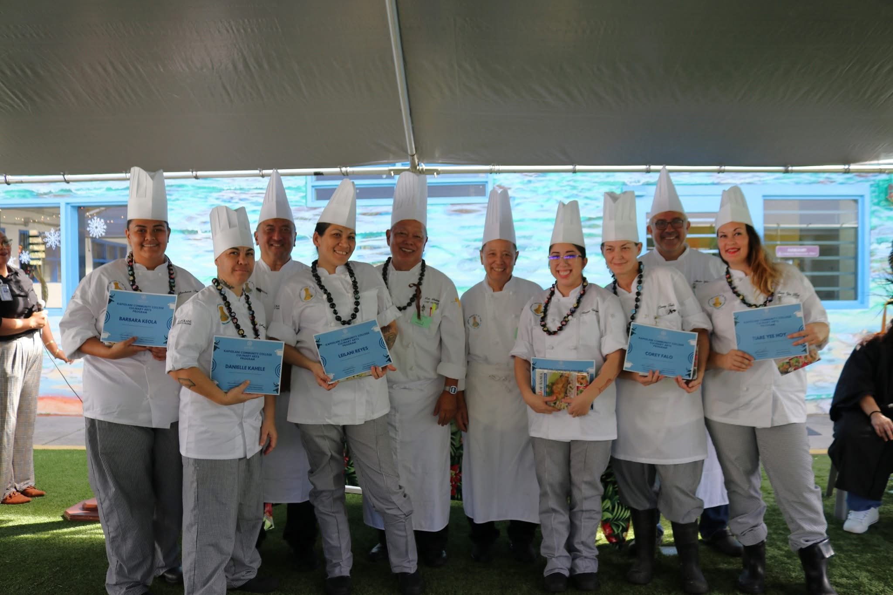
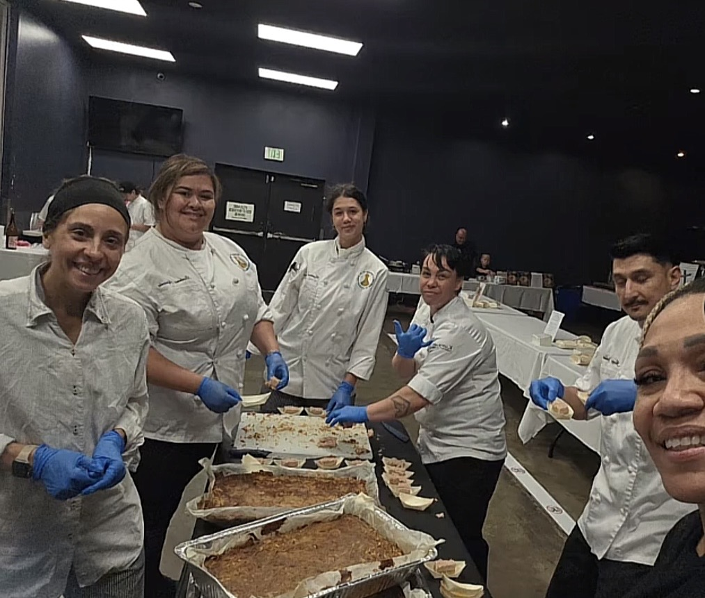
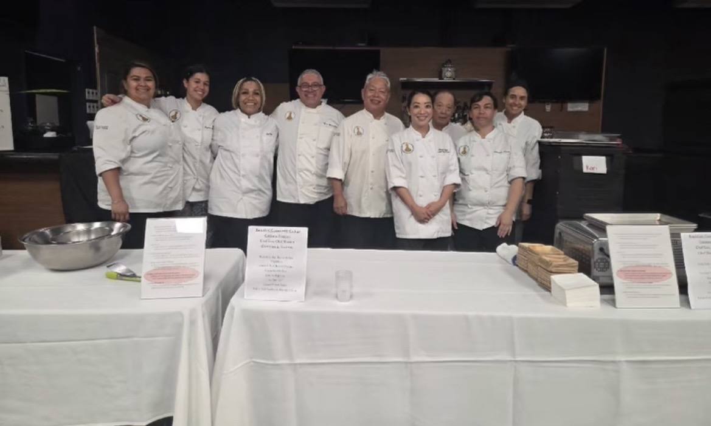
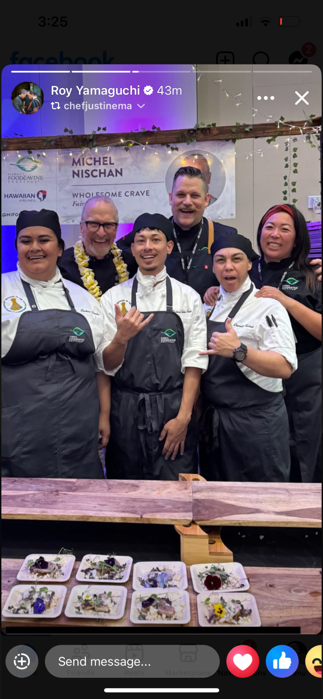
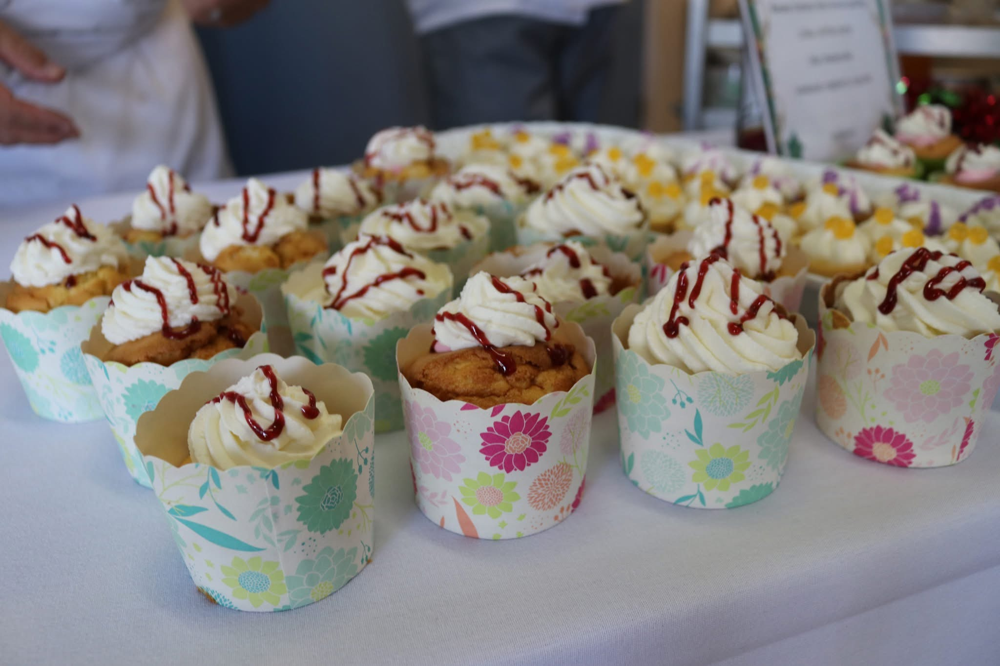
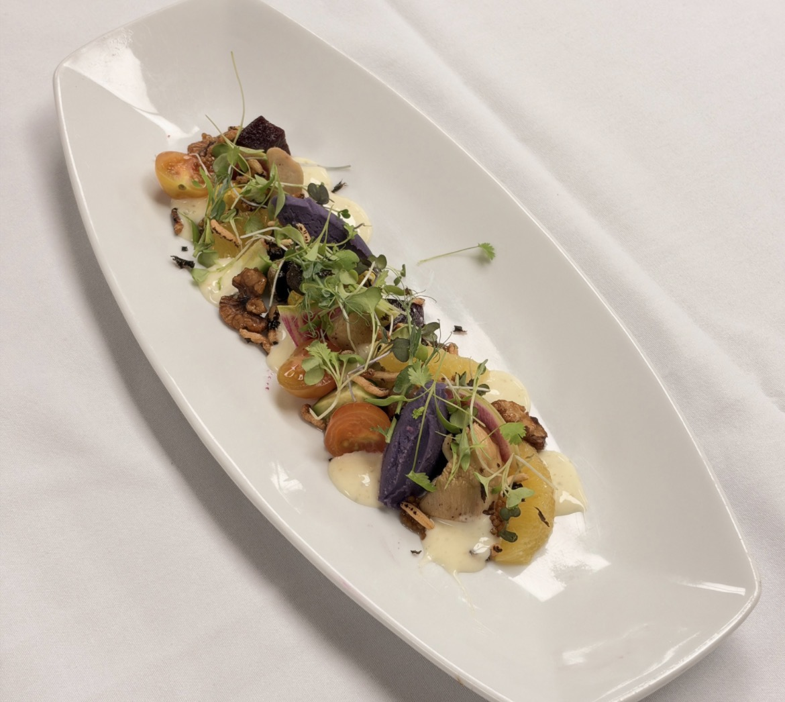
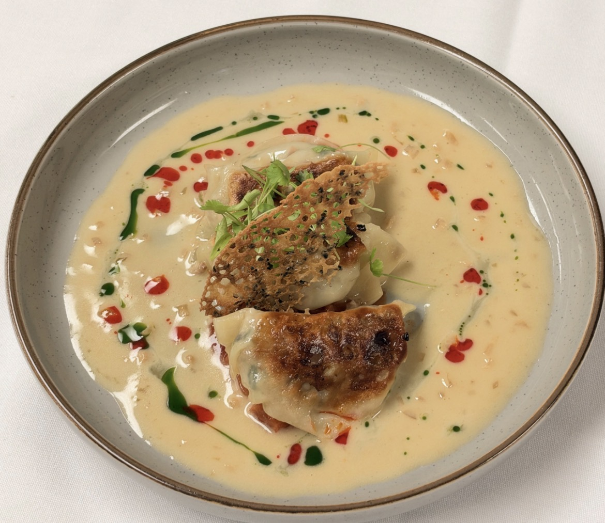

My culinary journey began in 2024 at the Women's Community Correctional Center. Since then, every lesson, shift, and opportunity to serve has helped me grow into a more confident and thoughtful culinary professional.
My name is Danielle Kahele, and I am a Culinary Arts student at Kapiʻolani Community College. My journey in food began in 2024 at the Women's Community Correctional Center (WCCC). That beginning became a path toward learning, responsibility, and new opportunities.
Through my culinary education and internship at Kāle's Hale, I learned that good food depends on more than a recipe. It takes preparation, consistency, communication, respect for ingredients, and a team willing to support one another.
My immediate goal is to gain more professional kitchen experience and continue improving my culinary and leadership skills. In the future, I hope to own a small restaurant or lunch truck on the mainland. This portfolio includes my story, work philosophy, internship experience, résumé, gallery, and seven program learning outcomes.

Learning alongside fellow culinary students.
2024 · The beginning
My culinary journey starts at WCCC.
Culinary education
At Kapiʻolani Community College, I build my foundation in culinary techniques and professional kitchen practices.
2026 · Kāle's Hale
My internship brings classroom skills into a professional kitchen.
Growing in responsibility
I progress to independently opening the restaurant and preparing bento service.
Made with intention
Learning to see the whole plate
Some of my biggest lessons have come from paying attention to the details: how food is cut, seasoned, cooked, arranged, and presented. Culinary school has taught me to connect technical skills with creativity and to keep improving through practice.
As I move forward, I want my work to reflect care, pride in my community, and a willingness to keep learning.
Work philosophy
Three Hawaiian values that guide my work
My work philosophy is grounded in three Hawaiian values: Kūlia i ka Nuʻu, ʻIke Loa, and Lōkahi. These guide how I prepare food, learn from others, and contribute to a professional kitchen.
Kūlia i ka Nuʻu · Strive for excellence
At Kāle's Hale, I wanted to do more than finish assigned tasks. I practiced careful meat slicing, consistent bento portions, and organized preparation because small decisions affect the quality of every meal. Over time, Chef Kale trusted me to open the restaurant independently and begin the day's bento production. That responsibility reminded me that excellence means being prepared, reliable, and willing to improve with every shift.
ʻIke Loa · Value learning
I learn by asking questions, observing experienced coworkers, and applying what I am taught. Chef Aaron showed me the importance of planning and organization, especially when several kitchen tasks must happen at once. I built on classroom lessons by preparing marinades, wrapping laulau, using the meat slicer, and learning how to work efficiently during service. I also discovered that teaching newer coworkers proper food rotation and storage helped strengthen my own understanding.
Lōkahi · Unity and teamwork
A kitchen cannot succeed through one person alone. Working with Jesse in the dishpit and Keanu during prep and service helped me recognize how each position supports the next. When I had downtime, I prepared ingredients, cleaned ahead, and helped teammates so our closing and opening shifts ran more smoothly. I learned that listening, communicating clearly, and anticipating what others need are as important as cooking skills.
These three values shape the culinary professional I am becoming: I strive to prepare food with care, remain open to learning, and help the whole team succeed. I want to carry that approach into every kitchen where I work.
Internship site · Kāle’s Hale
Kāle's Hale
Kāle's Hale is a yakiniku restaurant located in Kalihi, Honolulu. The restaurant brings together Japanese and Hawaiian flavors to create a distinctive dining experience. It is known for all-you-can-eat yakiniku, where customers grill their own meat at the table, and also serves dishes inspired by Hawaiian food traditions using local ingredients.
Chef Kale founded the restaurant, and his Hawaiian, Japanese, and Chinese roots are reflected in its food and overall style. As I described in my internship site profile, Kāle's Hale is a place for families, friends, and groups to enjoy a meal together. Its dining approach emphasizes sharing food and bringing people together; that is how I understand the purpose of the restaurant from my experience there.
My role as an intern
I gained experience in food preparation, line cooking, dishwashing, bento production, and catering support. My responsibilities included slicing meats, wrapping laulau, preparing marinades and side dishes, stocking and dating deliveries, organizing cold storage, cleaning equipment, and helping with opening and closing duties.
Chef Kale eventually trusted me to open the restaurant independently and get bento production started. I also learned from Chef Aaron's organization and time management and from teamwork with Jesse and Keanu. Working in this environment strengthened my understanding of customer service, food safety, and how each station contributes to the restaurant's operations.
Restaurant description adapted from my Week 4 “Kale's Hale Profile.” The restaurant's purpose is described from my perspective, not quoted as an official mission statement.

Working side by side—teamwork is a key part of my culinary education.
Internship experience
Learning by doing at Kāle's Hale
My internship took me through preparation, line service, cleaning, and catering. Each role helped me see how a professional kitchen works as one team.
01 / PREPARATION
Craft and consistency
I sliced pork, brisket, and tri-tip, wrapped laulau, prepared marinades and side dishes, and stocked ingredients. Repeating these tasks taught me to value clean cuts, consistent portions, and preparation before service.
02 / SERVICE
Volume and teamwork
Helping prepare 600 bento orders showed me how timing, organized stations, and clear communication affect quality. I also assisted with food preparation and service at an ʻIlima Awards event, gaining experience with event-scale production.
03 / RESPONSIBILITY
Trust and independence
As I became more confident, Chef Kale trusted me to open the restaurant independently and start bento production. I also helped newer coworkers learn labeling, food rotation, safe storage, and cleaning procedures.
Kitchen routines and professional growth
My responsibilities also included helping in the dishpit, cleaning grills and kitchen areas, organizing cold storage, and setting up the line for the next shift. I learned from Chef Aaron's time management and from working closely with Jesse and Keanu. Helping wherever I was needed taught me that sanitation and teamwork are essential to food quality and guest service.

Teamwork and organized preparation during a culinary service event. This image illustrates the collaborative skills I developed.

Working with culinary professionals at the Hawaiʻi Food & Wine Festival strengthened my confidence at events.
What I took away
By the time I completed my required 225 internship hours, I had grown from learning the daily routine to working independently. The biggest lesson was that being a dependable culinary professional means combining practical skills with preparation, respect, accountability, and care for the entire kitchen team.
The photographs above document culinary and event experiences; my written weekly journals provide specific evidence of duties completed at Kāle's Hale.
Beyond the classroom
Learning, giving back, and showing up
My culinary journey is about more than the hours I spend in a kitchen. Through KCC, I have had opportunities to challenge myself, celebrate milestones, work with others, and give back to the community. These experiences have helped shape the professional I want to become.

Sharing baking skills at a community event.
Food can bring people together
From culinary events to service projects, the most meaningful experiences have taught me that food is about people as much as it is about technique. I value every chance to work with classmates, support community events, and continue learning.
Certification
Japanese Bronze Medal Certification
Earning my Japanese Bronze Medal certification is a milestone in my culinary education. It represents the effort I have put into expanding my knowledge, practicing my skills, and learning from different culinary traditions.
Community & industry
Hawaiʻi Food & Wine Festival
Volunteering at the Hawaiʻi Food & Wine Festival gave me a chance to be involved in an important food-industry event and learn from the energy and teamwork that make culinary events possible.
Hospitality & service
ʻIlima Awards
Helping prepare and serve food at the ʻIlima Awards was a memorable part of my training. I experienced firsthand how preparation, timing, and communication come together during an event.
Giving back
Alani Children's Center Gingerbread Christmas Party
Volunteering at the gingerbread Christmas party gave me another opportunity to connect food, community, and the joy of helping make an event special for others.
Community relief
Kona Relief Bake Sale
I helped with a bake sale supporting people affected by the Kona relief situation. It reminded me that the skills we learn in culinary school can also be used to support neighbors during difficult times.
KCC involvement
Additional KCC Activities
I have also participated in various activities through KCC. Each experience has given me opportunities to collaborate, represent my program, learn beyond the classroom, and build confidence.
My culinary photo journal
From the classroom to the plate
These photographs capture the presentation skills, creativity, and attention to detail I have been developing through culinary education. Selected images are also referenced with the learning outcomes they help illustrate.
Balancing elements on a plate.Precision and presentation.

Creating a composed dish.Color and contrast.

Flavor and thoughtful sauce placement.Technique and finishing details.Exploring textures and composition.
These images are from my culinary portfolio collection; photographs are examples of my culinary learning environment and do not independently establish who prepared each item.
Culinary moments in the news
Experiences in motion
These news reports highlight two parts of my culinary journey: using food to support the community and pursuing professional skills through Japanese culinary training. The links go to the original coverage; no Google Drive account or access request is required.
Student bake sale supports Kona storm survivors
Hawaiʻi News Now covered a student-led bake sale organized by Kapiʻolani Community College culinary students and UH partners to raise funds for families affected by Kona Low flooding. Community service showed me that culinary skills can make a difference beyond the kitchen.
News coverage highlighted the Japanese Bronze Certification program offered to University of Hawaiʻi Community College culinary students. Earning this certification is part of my growth as a culinary student and represents the value I place on learning new techniques and traditions.
Video reports are credited to their respective news publishers. This portfolio does not require access to private Google Drive files.
Culinary Arts program
Seven learning outcomes
Each reflection connects an official Culinary Arts program outcome to a specific example from my education or internship. Supporting photos, certification coverage, and documented experience help illustrate these skills.
01
Culinary knowledge and technical skills
Program outcome: Integrate the knowledge, skills and attitudes in all areas of basic food preparation, advanced culinary arts, basic baking, nutrition, menu planning, guest services, and operational controls and management required to meet the requirements for a Certified Culinarian by the American Culinary Federation Foundation.
My reflection:
At Kāle's Hale, I put classroom food-preparation principles into practice by slicing pork, brisket, and tri-tip, making marinades and side dishes, wrapping laulau, running the line, and preparing bentos. Large orders challenged me to manage my time and maintain consistent portions. I also supported sanitation, storage, and equipment readiness, which showed me how cooking and restaurant operations depend on each other.
02
Professional work ethic
Program outcome: Incorporate within their work ethic the standards in attendance, behavior, grooming and dress that reflect the mature work attitude expected of industry professionals.
My reflection:
My responsibilities grew until I was trusted to open the restaurant independently and begin bento preparation. That meant arriving prepared, organizing the kitchen, paying attention to sanitation, and following through without constant supervision. I learned that professionalism is demonstrated through everyday habits, dependability, and respect for coworkers.
03
Critical and creative thinking
Program outcome: Make effective decisions with intellectual integrity to solve problems and/or achieve goals utilizing the skills of critical thinking, creative thinking, information literacy, and quantitative/symbolic reasoning.
My reflection:
When laulau repeatedly sold out, I helped prepare larger quantities in advance to meet customer demand. During slower periods, I also learned to use available time for prep and cleaning so closing would go more smoothly. These choices strengthened my ability to recognize a problem, weigh priorities, and act before service became more stressful.
Evidence: Internship journal reflections about preparing additional laulau, inventory, and using downtime productively.
04
Effective communication
Program outcome: Ethically compose and convey creative and critical perspectives to an intended audience using visual, oral, written, social, and other forms of communication.
My reflection:
Working on the line and preparing large bento orders required clear communication about timing, priorities, and shared tasks. I also explained food labeling, rotation, and proper storage to newer coworkers. Teaching these procedures helped me practice communicating not only what to do, but why it matters for food safety and the entire kitchen team.
Program outcome: Evaluate one's own ethics and traditions in relation to those of other peoples and embrace the diversity of human experience while actively engaging in local, regional, and global communities.
My reflection:
Preparing laulau helped me appreciate the care, knowledge, and cultural significance behind traditional Hawaiian foods. My culinary experience also deepened my respect for the different backgrounds and skills my coworkers bring to the kitchen. I value supporting locally produced food in Hawaiʻi and continuing to learn from the communities connected to it.
Evidence: Traditional laulau preparation at Kāle’s Hale and my community involvement.
06
Aesthetics and human experience
Program outcome: Through various modes of inquiry, demonstrate how aesthetics engage the human experience, revealing the interconnectedness of knowledge and life.
My reflection:
Preparing bentos taught me that food should be visually appealing as well as carefully cooked. I learned to pay attention to placement, portions, color, and consistency so customers receive a meal prepared with care. Through service and catering, I saw how presentation affects the experience of sharing and enjoying food.
Culinary plating example: color, arrangement, and attention to detail.
07
Connecting diverse perspectives
Program outcome: Explore and synthesize knowledge, attitudes and skills from a variety of cultural and academic perspectives to enhance our local and global communities.
My reflection:
My education and internship connected classroom techniques with local-style restaurant service, traditional Hawaiian dishes, large-scale catering, and the knowledge of my coworkers. Working with Chef Kale, Chef Aaron, Jesse, and Keanu taught me to value different skills and perspectives. I want to use that learning to contribute to my community through dependable, thoughtful culinary work.
Kapiʻolani Community College Certificate of Competence, Culinary Arts — December 2024. Further Culinary Arts and Dining Room Service studies (completion status to confirm).
Experience
Kāle's Hale · Culinary Intern (2026) Food preparation, line service, bento production, kitchen opening, sanitation, team support, and catering.
Core skills
Food preparation · Meat slicing · Bento assembly · Kitchen organization · Food safety and sanitation · Team communication · High-volume production · Inventory rotation · Time management
Earlier professional experience
Japan Village Walk · Line Cook (2019) Food preparation, portion control, rotation, and safe kitchen operations.
Buffalo Wild Wings · Line Cook (2019) Station preparation, sanitation, stocking, and service communication.
Subway · Night Lead (2012–2013) Shift leadership, training, closing procedures, inventory, and POS closeout.
Certifications
ServSafe Food Protection Manager — expires August 1, 2029. Peer Tutor Training Program — Windward Community College, December 2022. Class IV Forklift Operator — expires July 16, 2028.
Community service
Special Olympics event support (2017–2025).
Adapted from my 2025 résumé and updated with my 2026 internship. Completion dates for ongoing programs need confirmation.